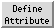

Define Attribute 
Items in Chimera such as atoms, bonds, residues, and models
have attributes: properties with
names and values.
Values of many attributes can be viewed and changed in the
attribute inspectors.
Attributes of atoms, residues, and molecule models can be created:
They can also be:
See also the
Attributes tutorial.
Define Attribute reads attributes from
assignment files.
Values of existing attributes can be
reassigned, or entirely new attributes created. The resulting
attributes are included in saved
sessions.
Define Attribute is also implemented as the command
defattr.
There are several ways to start
Define Attribute, a tool in the Structure Analysis category.
Starting Define Attribute brings up a dialog for
opening
an input attribute assignment file.
One or more molecule models should be chosen from
the Restrict to models list; only these will be considered
during attribute assignment. Individual models
or blocks of models can be chosen with the left mouse
button. Ctrl-click toggles the status of an individual model.
To choose a block of models without dragging,
click on the first (or last) and then Shift-click
on the last (or first) in the desired block.
Additional options:
- Open Render/Select by Attribute - whether to open the
Render/Select by Attribute tool
after assigning attribute values. Even when this option is off,
the attribute(s) will be available within the
Render/Select
by Attribute tool if it is opened later in the session.
- Send match info to Reply Log - whether to send details
about the attribute assignments to the
Reply Log
OK performs the assignment and dismisses the dialog,
whereas Apply performs the assignment without dismissing the dialog.
Close simply dismisses the dialog. Help opens
this manual page in a browser window.
Assignments can only affect structures that are open when
the attribute is defined/assigned.
For example, atoms in models opened after radii have been
changed using Define Attribute will have the Chimera
default radii.
Attribute assignment files are simple user- or program-generated text files
that can be read by Define Attribute or the command
defattr
to create attributes and assign their values.
Examples are provided below.
A hash symbol # at the beginning of a line indicates a comment.
Basic properties of an attribute are described
in control lines of the form:
identifier: value
Possible control line contents:
| identifier |
value |
description |
attribute
(required) |
alphanumeric string without spaces;
can include underscores; cannot begin with a digit, underscore,
or capital letter |
attribute name,
existing
or new |
match mode
(optional) |
any (default)
non-zero
1-to-1 |
expected matches per
assignment line
(an error message will be sent to the
Reply Log
when a line's match behavior differs from the match mode) |
recipient
(optional) |
atoms (default)
residues
molecules |
level of attribute assignment |
The attribute assignments are described in
assignment lines:
(Tab)atom-spec(Tab)attr-value
Any kind of
atom
specification can be used.
Control lines and comments
can be interspersed with assignment lines.
However, if multiple attributes are defined in the same file, the
attribute control line should precede all other
lines for the corresponding attribute.
Allowed attr-value types are:
- real number (float)
- integer
- boolean (true or false, case-independent)
- color - an attribute whose name
ends with color (case-independent) will be interpreted as
a color-valued attribute. A color value can be expressed as:
- a color name (a
built-in name
or one defined previously with
colordef)
- RGBA values, four space-separated numbers each ranging from 0 to 1
(inclusive) that represent the red, green, blue, and opacity
components of the color; if the last number is omitted, the opacity is
set to 1 (completely opaque)
- string - a string of any characters except tabs;
values that might be interpreted as one of the other types
should be enclosed in double quotes
New numerical attributes will appear in the attribute lists of
Render/Select by Attribute;
boolean and string attributes will be listed only in the
Select by Attribute
portion; color attributes will not be listed.
- percentExposed.txt
creates a new residue attribute, percentExposed, and assigns
values previously calculated by
Getarea for the protein structure 121p
(see raw results).
The figure at the top of the page was generated
by opening the structure, defining the attribute, and then using
Render by Attribute
to color the structure and render it as a worm. Atoms are undisplayed
except for the ligand (yellow spheres).
- midasrad.txt
assigns atomic radii, i.e., sets values for the existing
atom attribute
radius. The first specification in the file is #, which
assigns a value to all atoms. Subsequent lines
reassign the radii of atoms of particular elements.
Remember that atoms in models opened after the assignment
will have the default radii
instead of those in midasrad.txt.
- rescol.txt sets values for the existing
atom attribute
color and the existing
residue attribute
ribbonColor according to amino acid type.
Non-amino-acid residues are colored dark gray.
The colors are specified with
built-in names.
Note that the same results can be achieved with a Chimera
command file
(rescol.com).
- wwHydrophobicity.txt
creates a new residue attribute, wwHydrophobicity, with values
according to the "interface"
amino acid
hydrophobicity scale of
Wimley and White (literature reference provided in the file).
- hhHydrophobicity.txt
creates a new residue attribute, hhHydrophobicity, with values
according to the "biological"
amino acid
hydrophobicity scale of
Hessa et al. (literature reference provided in the file).
UCSF Computer Graphics Laboratory / January 2009